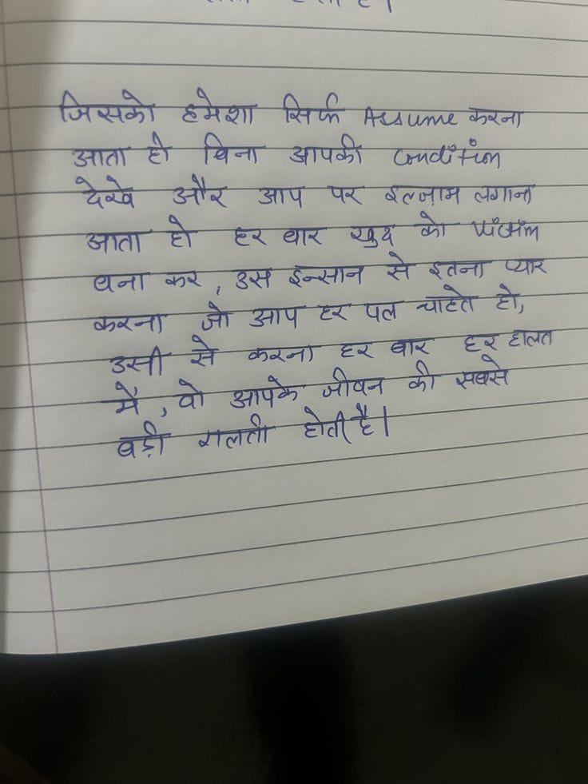

File: hin_sample_23.jpg

⚠️ No Output
जिसको हमेशा सिर्फ Assume करना आता हो बिना आपकी Condition देखें और आप पर इल्जाम लगाना जाता हो हर बार खुद को Victim बना कर, उस इन्सान से इतना प्यार करना जो आप हर पल चाहते हो, उसी से करना हर बार हर हालत में, वो आपके जीवन की सबसे बड़ी गलती होती है।
नए जिसका हमेशा A ICU RAT mee खाता ता far आप Oct Ear Se > ath जाप पर दललाम लगान जे -ज्ञाता शो धरवार Eo ही - लाता ऊर उस TT प्यार Say जा आप ex ag ae डे; a Poe aE aa una ‘i herent तट :
जाती - ey Ee ray StI = 7 once: Fa ee ARB, SAR ST पुर छेलजाम eg _ - अर्ती आओ ee हल ता ह Bg ७ es ४2:०२ ७७४ कि a " =) SE EOE g y a aa ee a
जिसमोे ६मशा आपळा आाता आाप लगान पर खथ यार जाता रतन उस इन्सान यना ज दर ट्ालत से करन उस्ी सघस रलल
❌ OCR Failed
आॢता
जिसंको हमेशा सिर्फ निव्व्रणयत्र कषना उनाति ही चिना आपकीं ज्एचम्च्क छिबे औऱ डप प्र बतजाव जगान्ा गि छछ॰ ऊ ब्नेा प्पड्फ उागि हीं हिबधित् षपुर ग्रण बरष्र उर्खां रंछ-सेट गिइड देठना पगान उताप हड पल न्याटरी हि। बनुच्रवी जाो जनी-खे बंतन्यछन। हबर बाज हबरहालत जीषन की स्यधिद। मै चो उनापकॽ बड़़ीं नालता। टोटी
जिसकों टमेशा भिर्फ फण्ल करना आतहो आता गो विना आपकी ज्लचतल थेथे और आप पक यूथ रत्जाम क पजल तगान जाता टो दथार इन्सान सेरताना म रतना प् धना कर। उसइन्सान उ एपलचाटो चांट टो़ कर्ना जोआप जॉ ॠशार वार घहाल उती मैोआपके रे करना जीषन की सप्से बैगलती ब होतीह